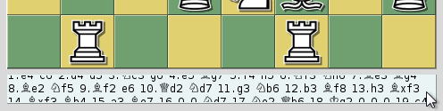

The overview browser is opened with a game from a game list. The browser is bound to that game list. If this game list is closed while the browser is still open, no further game can be loaded.
The overview browser divides the game into roughly equal intervals and shows the positions in an overview. The number of positions depends on the screen size and the chosen tab. Below each position you see the moves that led to that position, i.e. the last board shows the final position. Sometimes not all moves are visible within the text window. In that case the view can be scrolled, either by clicking into the text window with the left mouse button held down and dragging up or down, or by using the mouse wheel while the mouse pointer is held over the text field (see figure).

The context menu of the overview browser offers the following functions:
In addition there are buttons for the following actions: